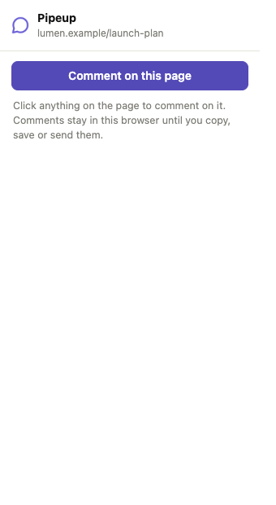
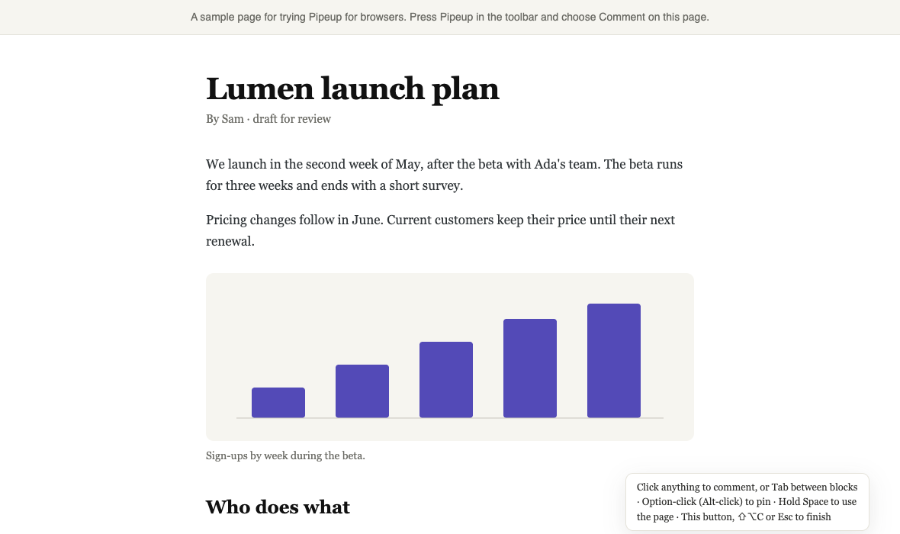
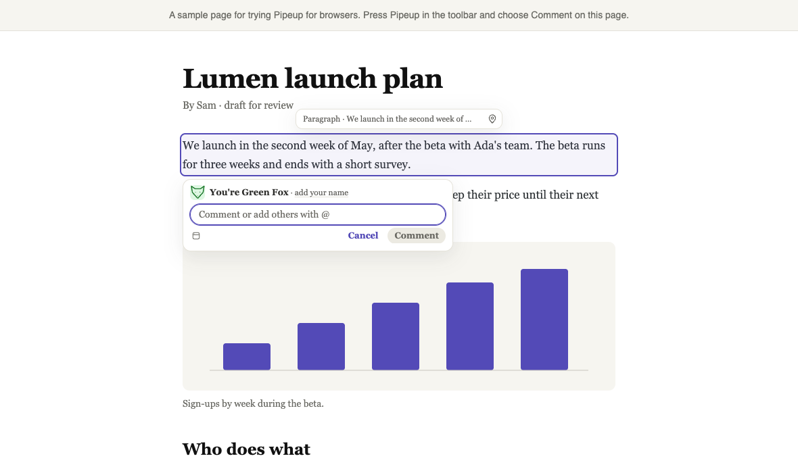
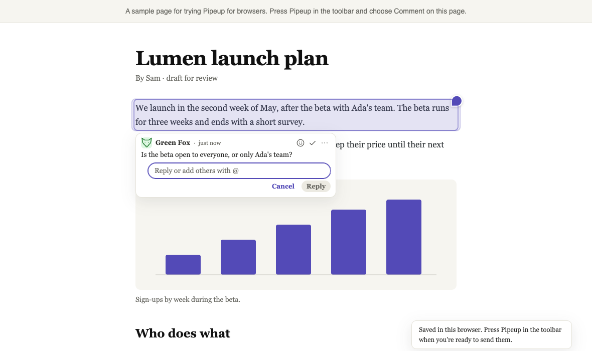
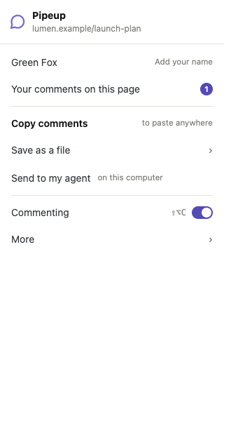
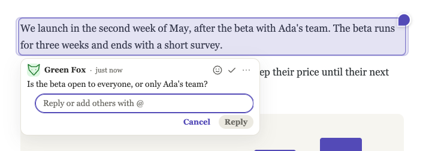
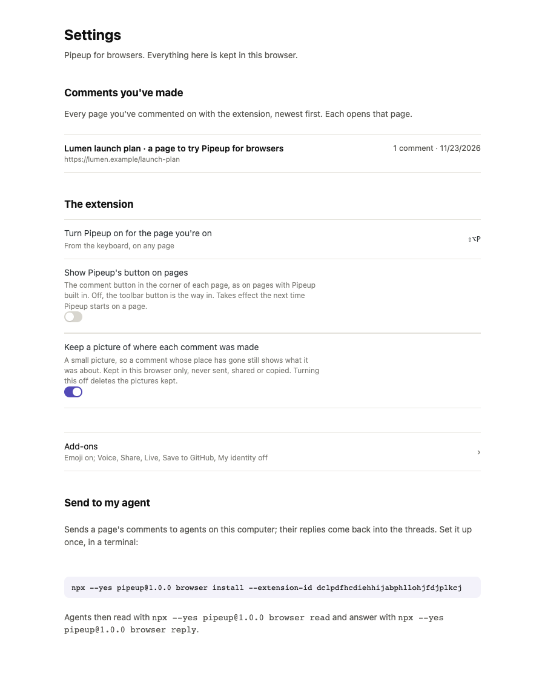

The newcomer's first run, second pass
The one menu did its job: before the first comment there is one button and one sentence, and after it, seven rows. What a newcomer now meets is mostly on the page itself, where the hint, the comment box and the moment after Return still speak to an expert. Six changes, each with the words it would remove.





1. The hint on the page says four things; a newcomer needs two 30 words → 8
Tab, Option-click to pin and Hold Space are for the second week. “This button” names Pipeup's corner button, which the extension hides, so the sentence points at nothing. The hint is Pipeup's own (the library), shown on the first visit.
The other three appear once, each the first time it would have helped: Tab's line the first time the keyboard is used in comment mode, Space's the first time a link or button is clicked while commenting, pinning's the first time a thread is opened. In the extension “This button” is dropped; on a page with Pipeup built in it stays.
2. After Return, a reply box to yourself 14 words → 0
The thread stays open with “Reply or add others with @”, Cancel and Reply. A newcomer reads it as “something more is expected”. Nothing is: the comment is in. The design note listed this as not in the change; it is the biggest remaining stumble.

Pricing changes follow in June. Current customers keep their price until their next renewal.
The box closes, the marker stays, the next block is not lit. Clicking the marker opens the thread with Reply, as it does today.
3. The same reassurance twice, with different verbs 30 words → 14
Before the first comment the menu says comments “stay in this browser until you copy, save or send them”; after it, the page says “Saved in this browser. Press Pipeup in the toolbar when you're ready to send them.” Say it once, after the first comment, when it is true, and with the menu's own verbs (“send” alone names a row most people don't have).
4. “Send to my agent · on this computer” is a stranger in the newcomer's menu
It is offered to everyone in Chrome, Edge and Firefox, set up or not. A newcomer has no agent and no idea what one is; the hint doesn't help. The spec's open question went the other way (move it up once set up); the newcomer's answer is to keep it out of sight until it is set up, then give it the top level.
Five rows before the first fold for a newcomer. Once set up, the row says which agent answered last, or “on this computer” until one has.
5. The box asks for “others” before there are any 6 words → 1
“Comment or add others with @” and “Reply or add others with @” teach @mentions to someone commenting alone on a page nobody else has touched. The placeholder says “Comment” until there is someone to add (another name on this page, or a name list from the host); then it says the longer one.
6. Settings reads like a manual 217 words → about 110
Each setting carries three sentences; a shortcut is listed as a setting; the agent set-up, two shell commands, is open on the page for everyone. One sentence each, the shortcuts on one line, and the agent set-up behind one line as the add-ons already are.

Settings
Everything here is kept in this browser.Words a newcomer reads, by screen
| Screen | Now | Proposed |
|---|---|---|
| Menu, before the first comment | 30 | 13 |
| The hint on the page | 30 | 8 |
| The comment box | 14 | 9 |
| After Return (thread + line) | 46 | 14 |
| Menu, Pipeup on (top level) | 35 | 28 |
| Settings | 217 | ≈110 |
Counted from the build's own screens (Chromium, a fresh profile, the sample page). The menu with More open and the side panel are unchanged.
What stays as built
- The off state: one button. Keeping one sentence under it (what clicking does) is the one piece of text a newcomer needs before the page.
- The seven rows and More, with Copy comments bold and first among the ways out. Nothing to cut there.
- The animal name (“Green Fox”) with Add your name beside it, in the box and the menu. It reads as a placeholder, which it is.
- The one-time line's place and timing: beside where the control would be, after the first comment.
Agreed with the maintainer, 23 November 2026
- All six, as drawn. The expert hints (Tab, Space, pin) are shown once each when first useful; after Return the box closes and the marker stays; Send to my agent sits under More until it is set up.
- Items 1, 2 and 5 are in the library (
libs/ts/pipeup) and change every host; 3, 4 and 6 are the extension's own. Specs: FUNCTIONAL_SPEC §4a, §5, §7 and EXTENSION_SPEC §3, §4a, §5 (change logs, 2026-11-23). To be built for 1.1.0 on top of the one menu.